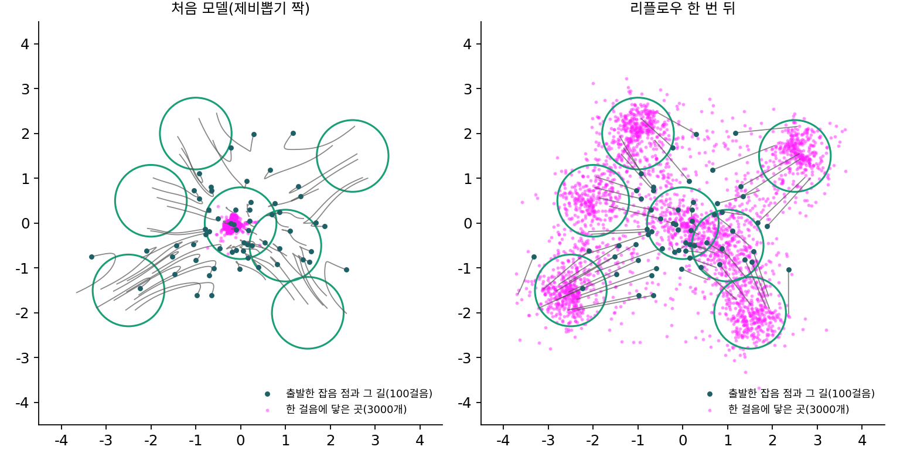

리플로우: 흐름이 만든 짝으로 다시 배워 길을 편다
짝마다의 길은 곧은데 그 길들을 평균한 흐름은 휜다. 휜 흐름을 큰 걸음으로 따라가면 빗나가서, 속도장이 정확해도 한 걸음에 그린 그림은 데이터 평균 하나로 뭉쳤다. 휘는 까닭은 한 자리를 여러 짝의 직선이 서로 다른 방향으로 지나가는 데 있었다. 길이 서로 엇갈리지 않게 짝을 지을 수는 없을까? 길은 그대로 직선이다. 바꾸는 것은 어느 잡음을 어느 그림과 짝지을지다.
엇갈리는 짝과 엇갈리지 않는 짝
1차원 두 봉우리 데이터(±2, 각 표준편차 0.5)로 보자. 1차원이면 짝의 직선이 엇갈리는지를 「두 짝의 잡음 순서와 그림 순서가 반대인가」로 바로 셀 수 있다. 제비뽑기로 지은 짝 두 개를 아무렇게나 골라 보면 49.7%가 서로 엇갈린다. 이 짝들로 배운 주변 속도장을 오일러 방법으로 걸으면 걸음 수에 따라 이렇게 된다. 데이터에서 |x| < 1인 점, 곧 두 봉우리 사이 골짜기에 놓인 점은 2.26%뿐이다.
| 오일러 걸음 수 | 1 | 2 | 4 | 8 | 16 |
|---|---|---|---|---|---|
| 도착한 점의 |x| 평균 (참은 2.0) | 0.000 | 1.261 | 1.657 | 1.828 | 1.913 |
| 골짜기(|x| < 1)에 떨어진 비율 | 100% | 31.8% | 11.2% | 5.9% | 3.9% |
이번에는 짝을 다르게 지어 보자. 이미 배운 흐름이 있으니, 잡음 점 하나하나를 그 흐름으로 아주 잘게(4000걸음) 따라가 도착점을 얻으면 (잡음, 도착점)이 새 짝이 된다. 흐름은 점의 순서를 지키므로(한 자리에 속도가 하나라 길이 엇갈리지 않으므로), 이 짝들은 잡음이 작으면 도착점도 작다. 새 짝 두 개가 엇갈리는 비율은 0이다. 엇갈리는 짝이 없으면 한 자리를 지나는 짝이 하나뿐이고, 주변 속도는 그 짝의 속도 그대로다. 흐름선이 짝의 직선 자체가 되니, 오일러 한 걸음이 도착점에 정확히 닿는다(이 계산에서 오차 2 × 10⁻¹⁶, 반올림 오차 크기).
한 번 배운 흐름으로 잡음을 데이터까지 보내 얻은 짝으로 플로우 매칭을 다시 하는 일을 리플로우 (흐름이 만든 짝으로 다시 배우기 / reflow)라 한다. 류싱차오와 동료들은 짝의 직선으로 배운 흐름을 정류 흐름(rectified flow, 곧게 편 흐름)이라 부르고, 리플로우를 되풀이하면 흐름이 점점 곧아진다고 했다. 류와 동료들은 리플로우가 옮기는 비용(볼록한 비용 함수로 잰 것)을 늘리지 않는다는 것도 증명했다.
2차원 일곱 봉우리에서 신경망으로
1차원에서는 흐름이 순서를 지킨다는 것만으로 리플로우 한 번이 길을 완전히 편다. 차원이 높으면 그렇게 간단하지 않다. 드래곤볼 일곱 개를 흉내 낸 2차원 데이터(봉우리 일곱 개, 각 표준편차 0.4)에서 작은 신경망(은닉층 셋, 폭 256)을 직접 배워 보았다. 처음 모델은 제비뽑기 짝으로 배웠고, 리플로우 모델은 처음 모델이 잡음 4만 개를 100걸음으로 보내 만든 짝으로 배웠다(스크립트 sources/flow-matching/reflow2d.py, 시드 고정, CPU로 약 1분). 도착한 점을 가장 가까운 볼로 나눈 비율이 참 비중과 얼마나 다른지를 총변동(두 비율 표의 차이의 절댓값을 더해 반으로 나눈 값, 0이면 같다)으로 쟀다.
| 걸음 수 | 1 | 2 | 4 | 100 |
|---|---|---|---|---|
| 처음 모델의 총변동 | 0.880 | 0.468 | 0.225 | 0.011 |
| 리플로우 모델의 총변동 | 0.020 | 0.019 | 0.017 | 0.012 |
처음 모델은 한 걸음에 모든 점이 데이터 평균 근처(퍼짐 0.06쯤)로 뭉쳤고, 리플로우 모델은 한 걸음에도 일곱 볼에 거의 참 비중대로 나뉘어 닿았다. 100걸음 길의 길이를 두 끝 사이의 직선 거리로 나눈 값은 처음 모델이 평균 1.602, 리플로우 모델이 1.002였다. 길이 거의 곧아진 것이다.

대가도 보인다. 리플로우 모델은 처음 모델이 만든 짝을 배우므로 처음 모델의 실수까지 물려받는다. 처음 모델을 100걸음 돌린 결과는 볼 근처(표준편차 두 배 안)에 84.6%가 닿았고 리플로우 모델은 83.0%였다(실제 데이터는 87.9%). 짝을 만들려고 잡음 4만 개를 100걸음씩 흘려 보내는 계산도 따로 든다.
짝을 처음부터 잘 짓기: 미니배치 최적 수송
흐름을 먼저 배우지 않고도 덜 엇갈리는 짝을 지을 수 있다. 옮기는 거리의 제곱 합이 가장 작아지도록 짝을 짓는 문제를 최적 수송이라 부른다. 데이터 전체를 한꺼번에 짝지을 수는 없으니, 학습 묶음(미니배치) 하나 안에서만 그림들과 잡음들을 최적 수송으로 짝짓고 그 짝으로 플로우 매칭을 한다. 2023년 통(Alexander Tong)과 동료들은 이것을 OT-CFM(최적 수송으로 짝지은 조건부 플로우 매칭)이라 부르며 흐름이 더 단순하고 안정적이며 생성이 빨라진다고 보고했고, 같은 해 풀라디안(Aram-Alexandre Pooladian)과 립먼 등은 묶음 안의 짝짓기가 기울기의 흔들림을 줄이고 흐름을 곧게 만든다고 보고했다. 리플로우와 달리 미리 흐름을 돌릴 필요가 없다.
ML에서: 한 걸음 생성기
류싱차오와 동료들은 2023년 InstaFlow에서 Stable Diffusion에 리플로우를 쓴 뒤 증류(여러 걸음 모델의 결과를 한 걸음 모델이 흉내 내게 배우기)를 더해 한 걸음으로 그림을 만드는 모델을 만들었다. 논문 요약은 MS COCO 2017 검증 그림 5천 장 기준 FID(진짜 그림들과 생성 그림들의 특징 분포가 얼마나 다른지 재는 값, 낮을수록 좋다)가 앞선 방법인 점진적 증류의 37.2에서 23.3으로 낮아졌다고 적는다.
그림처럼 차원이 아주 높으면 아무렇게나 그은 두 선분이 정확히 만날 일은 거의 없다. 그래도 문제는 남는다. 한 자리의 바로 곁을 서로 다른 그림으로 가는 선분 여럿이 스쳐 가면, 신경망은 그 근처에서 하나의 속도만 낼 수 있어 평균이 섞인다. 짝짓기를 손보는 방법들이 고차원에서도 쓸모 있는 까닭이다.
문제 9. 운동장의 두 줄
운동장 한쪽 줄에 네 사람이 1, 2, 3, 4 m 자리에 서 있고, 맞은편 2, 3, 5, 6 m 자리로 한 사람씩 옮겨 가야 한다. 옮기는 거리의 제곱 합을 가장 작게 하려면 누구를 어디로 보내야 하는가? 「제 앞자리가 비어 있으면 거기로 간다」는 방법과 견주어라.

앞자리가 비어 있으면 거기로 가는 게 제일 짧죠. 2 m 사람은 2 m로, 3 m 사람은 3 m로 가면 0이니까요. 남은 1 m 사람과 4 m 사람이 5 m와 6 m로 가면 4² + 2² = 20이에요.

순서대로, 곧 가장 왼쪽 사람을 가장 왼쪽 자리로 보내면요?

1 → 2, 2 → 3, 3 → 5, 4 → 6이라 1 + 1 + 4 + 4 = 10이에요. 0인 사람이 없는데 합은 절반이네요. 두 사람이 공짜로 가는 대신 1 m 사람이 4 m를 걸어야 해서 손해가 컸어요.

김민준 방법에서는 1 m 사람이 5 m로 가는 길이 2 m 사람의 길을 가로질러. 제곱으로 재면 먼 거리 하나가 가까운 거리 둘보다 훨씬 비싸서, 길이 엇갈리는 짝짓기는 언제나 둘을 바꿔 엇갈림을 풀면 더 싸져. 24가지 짝짓기를 다 해 보면 평균이 24고 순서대로가 10으로 가장 작아.
조교님이 답안지를 학번순으로 쌓아 두면 성적 입력할 때 엇갈릴 일이 없는 거랑 같아요.
문제 10. 한 걸음에도 맞는 짝
데이터가 x₀ ~ N(4, 0.5²), 잡음이 ε ~ N(0, 1)인 설정을 다시 본다. 짝을 제비뽑기로 지으면 주변 속도장으로 오일러 방법을 한 걸음에 풀었을 때 모든 샘플이 4에 모였다. 이번에는 짝을 순서대로 짓는다. 잡음 ε에는 그림 x₀ = 4 + 0.5ε를 짝짓는다. (가) 이 짝짓기에서도 ε만 모으면 잡음 분포, x₀만 모으면 데이터 분포인가? (나) 잡음 쪽 끝의 주변 속도 v(y, 1)을 구하고, 오일러 한 걸음으로 만든 샘플의 분포를 구하라. (풀어 본 뒤 위젯 2의 「문제 10 불러오기」로 확인해 보자.)
(가)는 돼요. ε가 N(0, 1)이면 4 + 0.5ε는 N(4, 0.25)니까요. (나)는 한 걸음에 다 4로 모였던 그 계산 그대로예요. v(y, 1) = y − E[x₀] = y − 4라서 또 전부 4에 모여요.
v(y, 1) = y − E[x₀]는 어떤 조건에서 나온 식이었죠?

잡음 쪽 끝에서 ε를 알아도 짝지은 그림은 아무것이나 될 수 있다는 것, 곧 ε와 x₀가 서로 상관없다는 조건이었어요. 이번 짝은 ε를 알면 x₀가 4 + 0.5ε로 딱 정해져요. 그 조건이 깨졌어요.
그러면 t = 1에서 자리 y = ε에 있는 점의 속도는 ε − x₀ = y − 4 − 0.5y = 0.5y − 4 하나뿐이야. 평균 낼 것도 없어.
한 걸음 가면 y − (0.5y − 4) = 4 + 0.5y, 곧 N(4, 0.25)예요. 데이터 분포 그대로예요. 코드로 걸음 수를 1, 2, 10으로 바꿔도 표준편차가 다 0.499예요.

왜 걸음 수와 상관이 없을까요?

이 짝에서 xt = 4(1 − t) + (0.5(1 − t) + t)ε라서 ε가 큰 점은 언제나 위에 있어. 어느 두 점의 길도 엇갈리지 않으니까 한 자리를 지나는 짝이 하나뿐이고, 평균된 속도가 짝의 속도 그대로야. 흐름선 자체가 직선이라 큰 걸음도 빗나가지 않아. 표준편차가 0.5(1 − t) + t로 곧게 변하니 평균과 표준편차가 둘 다 곧고, 그래서 흐름선이 곧은 거야.
미니배치 최적 수송이 노리는 게 이거네요. 데이터 전체의 이런 짝은 모르니까 묶음 안에서만이라도 맞춰 주는 거고요.
문제 11. 리플로우 뒤에도 스코어를 꺼낼 수 있나
문제 10의 순서대로 지은 짝(x₀ = 4 + 0.5ε)으로 학습한 속도장이 있다. 리플로우 한 번 뒤의 모델이 이런 꼴이다. 걸음마다 잡음을 다시 넣는 샘플러는 스코어가 필요하므로, 다리 식 s = −(y + (1 − t)v)/t로 속도장에서 스코어를 꺼내려 한다. (가) t = 0.5, y = 2.75에서 이 모델의 속도와, 다리 식으로 꺼낸 스코어는? (나) 그 시간 분포의 참 스코어와 견주어라. (다) 제비뽑기 짝으로 학습한 원래 모델이었다면?
이 짝의 길은 xt = 4(1 − t) + (0.5(1 − t) + t)ε니까 t = 0.5, y = 2.75면 ε = (2.75 − 2)/0.75 = 1이고, 속도는 0.5ε − 4 = −3.5예요. 다리 식으로는 s = −(2.75 + 0.5 × (−3.5))/0.5 = −2.0이에요. 다리는 같은 정보라고 했으니까 이게 스코어죠.
그 시간의 분포를 직접 적어 보면요?

평균 2, 표준편차 0.75인 가우시안이에요. 스코어는 −(2.75 − 2)/0.75² = −1.333인데요? −2.0이랑 달라요.
다리 식은 무엇에서 나왔죠?
트위디 공식이요. 트위디는 데이터에 그것과 상관없는 가우시안 잡음을 섞었을 때만 성립해요. 유도의 첫 줄이 「데이터 분포에 가우시안 종을 씌워 더한다」였는데, 이 짝에서는 잡음이 그림에 묶여 있어서 그렇게 쪼개지지 않아요. 짝마다 길은 곧아졌는데, 그 대가로 속도장과 스코어를 잇던 다리가 끊겼어요.
(다)는 원래 모델이면 같은 자리에서 속도가 −3.1이고 다리 식이 −2.4, 그 시간 분포 N(2, 0.3125)의 참 스코어도 −2.4라서 맞아요. 다리는 원래 모델에서만 서 있는 거였네요.

그래요. 리플로우를 거친 모델은 속도를 따라 매끄럽게 흐르는 데는 여전히 쓸 수 있지만, 스코어에 기대는 쓰임(걸음마다 잡음을 다시 넣는 샘플러 같은 것)에는 그대로 쓸 수 없어요. 무엇을 얻으면 무엇을 내주는지 함께 보는 게 좋아요.
확률론 수업에서 독립 가정을 빼면 분산의 덧셈 공식이 깨지던 거랑 같네요. 공식은 그대로 적혀 있어도 그 밑의 가정이 사라지면 쓸 수 없어요.